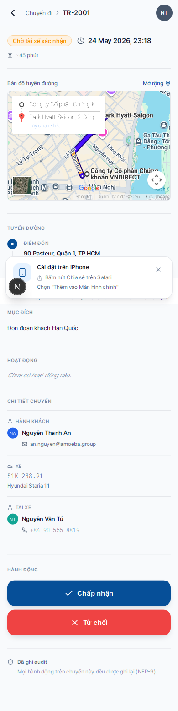

Xác nhận / Từ chối chuyến mới
- Khi nào
- Khi Admin gán bạn vào chuyến mới — bạn nhận thông báo đẩy + email
- Thời hạn
- Không có thời hạn cứng, nhưng phản hồi sớm giúp Admin gán lại nếu bạn bận
- Hậu quả
- Xác nhận → chuyến "khoá" lại cho bạn · Từ chối → Admin nhận thông báo và gán người khác
Cách xác nhận
1
Mở app từ thông báo đẩy, hoặc vào tab Chuyến của tôi → chuyến có nhãn "Chờ tài xế xác nhận".
2
Bấm vào chuyến để mở chi tiết. Xem kỹ:
- Điểm đón và Điểm đến — có map kèm
- Giờ khởi hành + thời lượng dự kiến
- Hành khách + Mục đích chuyến
- Xe được gán (biển số, model)

3
Bấm nút "✓ Chấp nhận" (xanh) nếu bạn nhận chuyến. Bấm "✗ Từ chối" (đỏ) nếu không nhận được — hệ thống sẽ yêu cầu nhập lý do.
4
Sau khi xác nhận, trạng thái chuyến đổi sang "Đã xác nhận" — Admin và hành khách nhận thông báo. Chuyến giờ xuất hiện trong banner ĐANG CHẠY hoặc khu vực "Trong ngày" trên Hôm nay.
Khi nào nên từ chối?
| Tình huống | Có nên từ chối? |
|---|---|
| Trùng lịch nghỉ phép / khám sức khoẻ định kỳ | ✅ Nên — ghi rõ lý do |
| Xe được gán đang hỏng, không khởi động được | ✅ Nên — báo Admin gán lại xe khác |
| Không quen tuyến đường, ngại đi | ❌ Không — báo Admin hoặc dùng GPS |
| Giờ khởi hành quá sớm/muộn so với ca | ✅ Nên — Admin sẽ điều chỉnh hoặc gán người khác |
⚠️
Lý do từ chối được ghi vào nhật ký kiểm toán và Admin sẽ thấy. Hãy ghi cụ thể, lịch sự — không viết "không biết" hoặc "ko nhận".